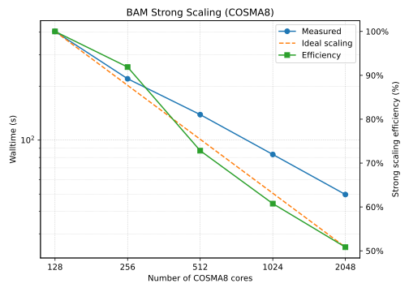
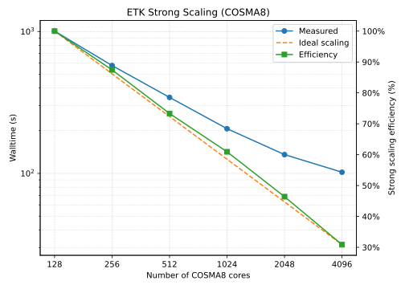
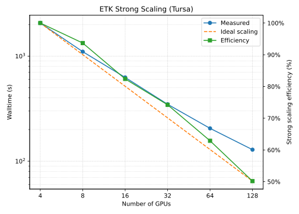
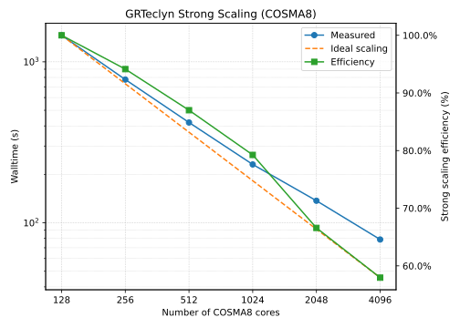
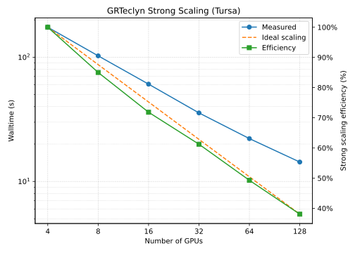
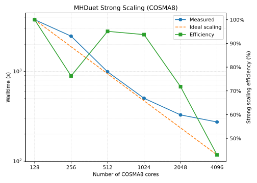
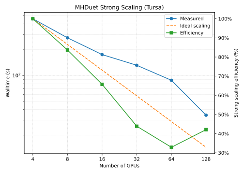

UKNR Code Assessment
Experiences and Performance Analysis of UKNR codes
University of Cambridge
Tuesday 09 June 2026
Introduction
Motivation
- There are many 3+1 NR codes that are being developed and/or used by the UKNR community community.
- There have been some efforts to compare some of these codes but most of these have focused on just two codes and/or their results.
- If we are provided with funding to form a full UKNR CCP, it’s important to understand the current state of the codes that are being used:
- What are their methods and capabilities[^no-physics]?
- How are they like to use/get started with?
- For codes that are currently under active development, what is their current development status?
- How do they perform?
Limitations of this assessment
- Given finite time, there are many things we weren’t able to investigate. A non-exhaustive list of these include:
- Matter (we looked at vacuum BHs only)1
- Testing out every feature and capability
- Accuracy of the results
- Rigorous performance comparisons between the codes2
- Weak scaling
- Assessment is a snapshot in time so subject to change.
Criteria for assessment
Although there are many other codes that are used internationally, we have chosen to only consider those that met the following criteria:
- The code has some relevance within the UKNR community. For example, there is at least one developer based in the UK or there is a non-trivial number of users.
- The code is capable of evolving in 3+1 dimensions (i.e. it is not dimensionally reduced and does not require the use of symmetries).
- The code is capable of evolving a binary black hole spacetime through inspiral, merger and ringdown.
This criteria is not exhaustive so we didn’t include every code meeting this criteria.
The codes we investigated
Using the criteria described on the previous slide, we identified the following codes:
- BAM12
- The Einstein Toolkit (ETK)
- with the Carpet driver (on CPUs)
- with the CarpetX driver (on GPUs)
- ExaGRyPE3
- GRTeclyn
- MHDuet (AMReX version only)
The codes and their capabilities
Common features
All of these codes use the following common methods:
- Finite difference methods for spatial discretisation
- Method of Lines for time integration
- Mesh refinement
- 3+1 evolution systems: BSSN, CCZ4 or Z4c with some variant of the moving puncture gauge conditions
- Kreiss-Oliger dissipation
- Parallelised using the Message Passing Interface (MPI)
Code details
Further details about each code can be found in the appendices linked below:
HPC resources
COSMA8
- CPU-based DiRAC system hosted at Durham University.
- 528 compute nodes in total:
- 360 nodes with AMD Rome/Zen 2 CPUs
- 168 nodes with AMD Milan/Zen 3 CPUs
- We used the newer Milan nodes for benchmarking.
- Milan node specifications:
- Dell PowerEdge C6525 server
- 2x AMD EPYC 7763 CPUs, 64 cores each (128 total), 2.45 GHz base clock
- 1 TB DDR4 RAM
- 1x Mellanox ConnectX-6 HDR InfiniBand NIC, 200 Gbps
- HDR200 InfiniBand network with a non-blocking fat-tree topology.
Tursa
- GPU-based DiRAC system hosted by EPCC at the University of Edinburgh.
- 178 compute nodes in total:
- 114 nodes with Nvidia A100 40 GB GPUs
- 64 nodes with Nvidia A100 80 GB GPUs
- We used the 80 GB A100 nodes for benchmarking.
- Node specifications:
- Atos BullSequana XH2000 server
- 2x AMD EPYC 7413 CPUs, 24 cores each (48 total), 2.65 GHz base clock
- 4x Nvidia A100 SXM 80 GB GPUs with NVLink interconnect
- 1 TB DDR4 RAM
- 4x Mellanox ConnectX-6 HDR InfiniBand NICs, 200 Gbps each
- HDR200 InfiniBand network with a non-blocking 2-layer fat-tree topology.
Qualitative setup and user experience
BAM
Pros
Few dependencies and simple build system so easy to get set up with on a new system.
Quick to build.
Structure of the code is easy to understand and follow which makes modification straightforward.
Familiar workflow:
mpirun -n <num_procs> ./bam parfile.parMature code with a long history of production simulations.
Cons
- Private code
- Limited documentation
- Old style C requires some workaround with modern compilers
- No support for GPU offloading
Einstein Toolkit
Pros
Open source with a large and active community.
Extensive collection of thorns that provide lots of capabilities and flexibility.
SimFactory2 provides a convenient abstraction layer for building and running simulations on supported HPC systems.
Cactus thorn interface means that the process to adding new capabilities is standardised.
Tutorials on how to get started.
Some thorns have great documentation.
Can print information about all parameters by doing
./cactus_sim --describe-all-parametersMany thorns are mature and have been used in many production simulations.
Cons
- Large number of dependencies and complex build system.
- Slow to build (especially if using default release thornlist used).
- Difficult to set up on a new unsupported system.
- Some thorns have very little documentation.
- SimFactory2 workflow may be unfamiliar for those coming from other codes.
- CarpetX thorns are still under active development and much less mature than equivalent Carpet thorns.
- Had a very difficult time getting CarpetX to run on Tursa due to a bug but cannot be sure if this is a CarpetX or Tursa problem.
ExaGRyPE
Pros
- Open source
- Abstracted interface so scientific user shouldn’t need to worry about technical details
- Python domain-specific language (DSL)
- Good connections with core developers
- Portability to different architectures
- Good documentation
Cons
- Many parameters are hardcoded and not exposed to the user1.
- Non-standard workflow: no ability to change parameters at runtime.
- Only uses open GPU programming models (SYCL, OpenMP) which are often not first-party supported by GPU vendors and less performant than vendor-specific models (CUDA, HIP).
- GPU support finicky (development ongoing).
- Slightly difficult to debug build errors due to Python wrapper.
GRTeclyn
Pros
Open source
Not too many dependencies so relatively straightforward to port to a new system
Relatively quick to build
Familiar workflow:
mpirun -n <num_procs> <exe> <param_file>Robust GPU support from AMReX on Nvidia, AMD and Intel GPUs
Good and improving documentation
Cons
- No standardised interface to add new capabilities like ETK
- Relatively new code so less mature than some others
- Some features are still under development and not yet available (e.g. Apparent Horizon Finder, GW extraction)
- Depends on AMReX which we have less control over.
MHDuet
Pros
Simflowny code generation means it can be quicker for scientific users to get from new equations to code.
Simflowny is open source
Simple build system (just a single Makefile)
Not too many dependencies (especially in the vacuum case)
Robust GPU support from AMReX
Familiar workflow:
mpirun -n <num_procs> <exe> <param_file>
Cons
- Auto-generated code can be very verbose and difficult to read
- Can be slow to compile depending on problem size
- Build system is not very portable
- Non-trivial to add new capabilities that are not supported by Simflowny
- Depends on AMReX which we have less control over
Scaling
Setup and common configuration
- We only considered strong scaling (i.e. increasing the computational resources for a fixed problem size).
- BH binary simulation with initial data based on the GW150914 event.
- For an individual code, we used the same problem configuration for both CPU and GPU scaling tests1 to make comparisons between them fairer.
- For each code, we started with a grid configuration that could be plausibly used in a production simulation and then iterated on the size of this grid until we found a configuration that saturated most of the RAM on a single COSMA8 node or a single Tursa node.
- Grid configurations therefore differ between codes but they are in a similar ballpark.
- We only evolved each code for a few timesteps on the coarsest level (with subcycling) and ignored time spent on initialization and finalization.
- We used each code’s internal timing/profiling tools to measure the walltime of the main evolution loop.
- For all codes, the total mass in the simulation is \(M \approx 1\) in code units.
- Parameter files, build and job submission scripts can be found in the uknr-benchmarking repository.
- On COSMA8, we used between 1 and 32 nodes (128 to 4096 cores).
- On Tursa, we used between 1 and 32 nodes (4 to 128 GPUs).
BAM problem configuration
- 12 levels of mesh refinement (including coarsest level).
- 6 levels of fixed boxes and 6 levels of moving boxes.
- \(320^2 \times 160\) points and \(4400^2 \times 2200\) (bitant symmetry) length in code units on the coarsest level.
- \(\sim 1/149\) resolution on the finest level.
- 2 timesteps on the coarsest level with subcycling from level 7 onwards (\(t_{\text{end}} = 0.107421875\)).
- Due to BAM’s data distribution, we were only able to go up to 16 nodes (2048 cores) on COSMA8 (there was an error with 4096 cores).
BAM scaling

ETK problem configuration
Carpet CPU tests
- 10 levels of mesh refinement (including coarsest level).
- \(320^2 \times 160\) points and \(1024^2 \times 512\) (bitant symmetry) length in code units on the coarsest level.
- \(1/160\) resolution on the finest level.
- Subcycling on all but the coarsest two levels.
- Terminate after 256 iterations (1 timestep on the coarsest level: \(t_{\text{end}} = 0.4\)).
CarpetX GPU tests
- 10 levels of mesh refinement (including coarsest level).
- \(288^3\) points and \(1024^3\) length in code units on the coarsest level.
- Some issues with bitant symmetry hence not used.
- \(1/144\) resolution on the finest level.
- Subcycling on all levels.
- Terminate after 512 iterations (1 timestep on the coarsest level: \(t_{\text{end}} \approx 0.889\)).
ETK scaling


GRTeclyn problem configuration
- 10 levels of mesh refinement (including coarsest level).
- \(320^2 \times 160\) cells and \(1024^2 \times 512\) (bitant symmetry) length in code units on the coarsest level.
- \(1/160\) resolution on the finest level.
- Subcycling on all levels.
- 1 timestep on the coarsest level (\(t_{\text{end}} = 0.8\)).
GRTeclyn scaling


MHDuet problem configuration
- 10 levels of mesh refinement (including coarsest level).
- \(256^3\) cells and \(1024^3\) length in code units on the coarsest level.
- Fixed mesh refinement for the coarsest 6 levels with boxes of lengths: 1024, 512, 256, 128, 64, 32
- \(1/128\) resolution on the finest level.
- Subcycling on all levels.
- 1 timestep on the coarsest level (\(t_{\text{end}} = 1.6\)).
MHDuet scaling


All codes CPU scaling
All codes GPU scaling
Conclusions
Summary and future work
- We have explored the user experience and performance of some popular UKNR 3+1 codes on CPU and GPU-based HPC systems.
- We will analyze the profiling data from the scaling tests to identify where time is being spent during simulations.
- We are writing a report on our findings which will be made publicly available and feed into the main UKNR scoping report.
- With greater time, we would have liked to have done the following:
- Weak scaling analysis
- Accuracy comparison between the codes of a full BBH simulation
- Resources required to achieve the same accuracy
Any questions?
Appendices
BAM
- Written in (old-style) C with pure MPI parallelisation
- Very few dependencies (just a C compiler, Make, MPI, and optional HDF5)
- Originally written in the 1990s, it reached its current form in the mid-late 2000s and has not changed much since then.
- Node/vertex-centred with moving-box-style mesh refinement
- Berger-Oliger subcycling is used for most of the finer levels but disabled on coarser levels for stability.
- Sixth-order spatial differencing with eighth order KO dissipation
BAM (continued)
- BSSN evolution scheme with Sommerfeld BCs.
- Puncture tracking
- Apparent Horizon finder
- Grid symmetries (e.g. bitant, quadrant, octant, etc.)
- Fourth or sixth order Lagrange polynomial interpolation of grid variables
- GW extraction via the Newman-Penrose formalism.
Einstein Toolkit (ETK)
- The Einstein Toolkit is built on the Cactus Computational Toolkit (CCTK) software framework.
- A CCTK code comprises the Cactus flesh with additional thorns that implement a specific problem.
- The ETK is not really a single code but rather a collection of thorns with the Cactus flesh that can be used for various problems.
- Thorns can be written in C, C++ or Fortran but they have a standardized interface to the flesh and other thorns.
- The recommended way to build, manage and run simulations is with the SimFactory2 thorn which provides an abstraction layer over different HPC systems. It requires the local system to be configured in its database.
- One of the core thorns is the driver which implements the computational grid, mesh refinement (if relevant) and associated infrastructure.
- The most popular and well-supported driver is Carpet which works on just CPUs.
- Carpet supports OpenMP parallelisation.
- The next generation replacement for Carpet is CarpetX which is built on the AMReX framework for block-structured AMR.
- CarpetX supports OpenMP parallelisation and offloading to Nvidia GPUs via CUDA1.
Einstein Toolkit - CPU tests
For our CPU tests, we used:
- A subset of the thorns from the 2025_05 Kruskal ETK release.
- The Carpet driver.
- The McLachlan BSSN evolution thorn with Sommerfeld BCs.
- Eighth-order spatial differencing.
- Subcycling using buffer zones with fifth-order spatial prolongation (interpolation from coarse to fine) and second-order temporal prolongation.
- Moving-box style mesh refinement provided by the CarpetRegrid2 thorn.
This is loosely based on the GW150914 ETK gallery example but with the Llama multipatch infrastructure removed (for fairer comparison with other codes).
Einstein Toolkit - GPU tests
For our GPU tests, we used:
- Recent development versions of the CarpetX and SpacetimeX thorn collections from Liwei Ji with subcycling support.
- The CarpetX driver.
- The Z4c evolution thorn from SpacetimeX
- Fourth-order spatial differencing.
- Subcycling with fifth-order prolongation.
- Moving-box style mesh refinement provided by the BoxInBox thorn.
- Sommerfeld BCs provided by the NewRadX thorn.
CarpetX is still under active development and the software versions used for testing were not even merged into the main repositories so observations should be interpreted with this caveat.
Einstein Toolkit - additional capabilities
The ETK has an extensive list of additional capabilities some of which have multiple implementations via different thorns. These include (but are by far not limited to):
- Multipatch support with “cubed sphere” outer patches (Llama infrastructure for Carpet and CapyrX infrastructure for CarpetX).
- Puncture tracking (PunctureTracker thorn).
- Apparent Horizon finding (AHFinder, AHFinderDirect, ET_BHaHAHA thorns).
- GW extraction via the NP formalism (WeylScal4, NPScalar and Multipole thorns).
- Lagrange polynomial interpolation of grid variables (CarpetInterp2 and AEILocalInterp thorns for Carpet and core capability for CarpetX).
- Reflection and rotational grid symmetries.
- Output of data that can be used with the SpECTRE Cauchy Characteristic Extraction code provided by the CCE_Export thorn.
Note that many Carpet-compatible thorns have been rewritten to support CarpetX and are often renamed by appending with an “X” (e.g. TwoPunctures \(\to\) TwoPuncturesX)
ExaGRyPE
- ExaGRyPE is an NR code built upon ExaHyPE 2 (second generation Exascale Hyperbolic PDE Engine) which in turn is built upon the Peano framework for solvers on dynamical adaptive Cartesian meshes.
- ExaGRyPE, ExaHyPE 2 and Peano are written in a mix of C++ and Python.
- To build a simulation executable, a Python script is invoked with simulation parameters passed as arguments (which cannot be changed at runtime).
- ExaGRyPE uses a mix of domain decomposition and task-based parallelism:
- MPI is used for domain decomposition
- On CPUs, Peano/ExaHyPE 2 supports task-based parallelism via C++ standard library threading, Intel Threading Building Blocks (TBB), OpenMP and SYCL.
- On GPUs, they support offloading via SYCL and OpenMP (vendor-agnostic).
- Note that ExaGRyPE support for these programming models is not yet guaranteed.
- Cell-centred grid with spacetree1 AMR.
- Fourth-order spatial differencing with sixth-order KO dissipation.
- First-order explicit time integration is generally used but RK4 is also supported.
- Trilinear spatial prolongation and averaging for restriction (interpolation from fine to coarse).
ExaGRyPE (continued)
- CCZ4 evolution scheme which is recast as first-order-in-space so there are 58 evolved variables. Algebraic constraints are enforced.
- Sommerfeld BCs.
- Bowen-York initial data provided by TwoPunctures.
- Trilinear interpolation from grid variables onto particle tracers
- GW extraction via the NP formalism using the above particle tracer interpolation.
- Puncture tracking using the particle tracer interpolation.
GRTeclyn
- Written in modern C++.
- Built upon and integrated with the AMReX framework for block-structured AMR.
- Successor to GRChombo which was built on the Chombo AMR libraries
- Few dependencies: C++20 compiler (with GPU support if required), GNU Make, MPI and AMReX.
- MPI+X parallelized with X is OpenMP, CUDA (on Nvidia GPUs), HIP (on AMD GPUs) or SYCL (on Intel GPUs).
- Cell-centred grid with block-structured AMR.
- Arbitrary mesh refinement criteria but something emulating moving boxes is typically used on the finest few levels for BH binaries.
- Fourth-order spatial differencing with sixth-order KO dissipation.
- Fourth-order spatial prolongation, third-order temporal prolongation and fourth-order restriction.
GRTeclyn (continued)
- CCZ4 evolution scheme with Sommerfeld BCs and algebraic constraint enforcement
- Puncture tracking
- Lagrange polynomial interpolation of grid variables using AMReX particle infrastructure (usually fourth order)
- GW extraction via the NP formalism using above interpolation
- Grid symmetries (e.g. bitant, quadrant, etc)
MHDuet
- MHDuet is a code that is automatically generated using the Simflowny infrastructure.
- To generate a code using Simflowny, the scientific user needs to provide the following information in MathML format (typically generated using a Maple script):
- Evolution equations
- Initial conditions
- Boundary conditions
- Discretisation scheme
- The generate code is built on either the SAMRAI or AMReX libraries. We focus on the AMReX version from now on.
- The generated code is written in C++ and parallelized with MPI+X where X is OpenMP, CUDA (on Nvidia GPUs) or HIP (on AMD GPUs).
- Mainly focused on MHD spacetimes rather than vacuum BHs.
- Relatively small number of dependencies in the vacuum case (similar to GRTeclyn but also with HDF5) but more in the MHD case (which we don’t consider).
MHDuet (continued)
- Node/vertex-centred grid with block-structured AMR
- Fixed mesh refinement in the form of concentric boxes is typically used on coarser levels.
- On finer levels, function-based refinement and shadow-based refinement are supported.
- Fourth-order spatial differencing with sixth-order KO dissipation
- Fifth order spatial prolongation and third-order temporal prolongation
- CCZ4 evolution scheme with algebraic constraint violations damped.
- Extrapolating BCs are typically used.-
- Various reductions of grid variables can be computed (e.g. sums, extrema, norms, integrals, etc.)
- Linear interpolation of grid variables on spheres and planes for diagnostics and GW extraction.
https://tinyurl.com/uknr-benchmarking
UKNR CCP Abingdon Meeting 2026